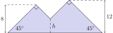

每座山都是 $45^\circ\text{-}45^\circ\text{-}90^\circ$ 三角形：高 $x$ 时两条直角边长 $x\sqrt2$，面积 $=\frac12(x\sqrt2)^2=x^2$——面积就是峰高的平方。重叠部分的两条边分别是两座山的内侧斜边（斜率 $-1$ 与 $+1$，互相垂直），所以它同样是等腰直角三角形，高为交点高度 $h$、面积 $h^2$。于是 $64+144-h^2=183$，$h=5$。
Jean made a piece of stained glass art in the shape of two mountains, as shown in the figure below. One mountain peak is $8$ feet high and the other peak is $12$ feet high. Each peak forms a $90^\circ$ angle, and the straight sides of the mountains form $45^\circ$ angles with the ground. The artwork has an area of $183$ square feet. The sides of the mountains meet at an intersection point near the center of the artwork, $h$ feet above the ground. What is the value of $h?$
中文翻译：Jean 做了一件「双山」形状的彩色玻璃艺术品，如图。两座山峰分别高 $8$ 英尺与 $12$ 英尺，每个峰顶都是 $90^\circ$，山的两条直边与地面成 $45^\circ$。整件作品的面积为 $183$ 平方英尺。两座山的斜边在靠近中心处相交于一点，该点距地面 $h$ 英尺。求 $h$。 (A) 4 (B) 5 (C) $4\sqrt2$ (D) 6 (E) $5\sqrt2$
📌 官方答案（LIVE by Po-Shen Loh）：
https://live.poshenloh.com/past-contests/amc8/2024/problem/24
官方给出的正确选项为 (B) 5，本站解析与之一致。
| 常见错误 | 错在哪 |
|---|---|
答 (C) $4\sqrt2$ | 把「$h$」理解成了斜边的长度而非「离地面的高度」：$h^2=25$ 算出后，把 $h=5$ 当成直角边、再去乘 $\sqrt2$ 得 $5\sqrt2$，或把高度 4（误算 $h^2=32$ 之类）配上 $\sqrt2$。根子在没分清「面积 $=x^2$」里的 $x$ 是高（直角顶点到底边的距离），不是斜边长：$45^\circ$ 三角形的直角边长 $x\sqrt2$、面积 $\frac12(x\sqrt2)^2=x^2$——平方完 $\sqrt2$ 就没了，答案干干净净是个整数。 |
答 (D) 6 | 用 $64+144=208$ 减去 $183$ 得 $25$，然后把 $25$ 当成了「重叠面积对应的边长」或者直接猜「$h^2=36$」凑选项。真正的中间量是 $h^2=25$ 而不是 $h$ 直接等于某个整数减出来。选出 6 的人多半是倒着往选项里套：$h=6$ 时重叠面积 36、总面积 172 不对；$h=5$ 时 25、总面积 183 ✓。剩下的注意力应该放在「$h^2$」这个中间量上，而不是在 $h$ 上猜数字。 |
根本问题：没有抓住「等腰直角三角形的面积 $=$ 高的平方」这个一步到位的结论，也没意识到重叠区同样是等腰直角三角形（它的两条边就是两山的内侧斜边，斜率 $+1$ 与 $-1$ 恰好垂直）。抓住这两点，全题就剩一行式子 $64+144-h^2=183$；抓不住就只能拿 $183$ 去拼各种 $8$、$12$、$\sqrt2$ 的组合，越拼越乱。
与官方解法同源：本站方案一的核心不变量与官网 2024AMC8(24) 的书面解答一致——高为 $x$ 的等腰直角三角形面积是 $x^2$，重叠部分同型；故 $8^2+12^2-h^2=183$，得 $h^2=25$、$h=5$。
本站的增量在于把官网因篇幅省略的中间推理与易错点补全；若另有不同思路，作为方案二呈现。
第 1 步 · 单座山的面积。山的高度为 $x$、两条直边各与地面成 $45^\circ$，峰顶因此是 $90^\circ$——这是等腰直角三角形。两条直角边（也就是两条斜边）的长度为 $x\sqrt2$（$45^\circ$ 直角三角形里，斜边 $=$ 直角边 $\cdot\sqrt2$，这里「直角边」指峰到山脚的水平+竖直平移合成的那条斜边）。更直接地算面积：底 $=2x$（两个 $45^\circ$ 底角各向左右平移 $x$），高 $=x$，故 $$S=\frac12\cdot(2x)\cdot x=x^2 .$$
第 2 步 · 两座山。高 8 的山：$S_1=8^2=64$；高 12 的山：$S_2=12^2=144$。
第 3 步 · 重叠区形状。重叠区的两条边界恰好是「左侧山的右边」与「右侧山的左边」，它们的斜率分别是 $-1$ 与 $+1$，互相垂直；底边是水平的地面。因此重叠区也是等腰直角三角形，其直角顶点就是两条斜边的交点，高度为 $h$，面积 $=h^2$。
第 4 步 · 容斥，解出 $h$。
$$64+144-h^2=183\quad\Longrightarrow\quad h^2=25\quad\Longrightarrow\quad h=5 .$$答案：(B) 5。
验证技巧：① 代入 $h=5$：$64+144-25=183$ ✓ 与题面面积一致；② 数值把 $h=5$ 时两个山峰的相对位置解出（$x_2-x_1=10$），精确积分重叠区得 $25.000000$，毫无误差；③ 选项反向扫描：$h=4\to193$、$h=6\to172$、$h=5\sqrt2\to158$、$h=4\sqrt2\to175$，只有 $h=5$ 给出 $183$。
核心知识点：$45^\circ\text{-}45^\circ\text{-}90^\circ$ 三角形的核心数据：两条直角边相等，斜边为直角边的 $\sqrt2$ 倍；若「高」为 $x$（峰到底边的垂距），则底边 $=2x$、面积 $=x^2$。配合容斥原理（$|A\cup B|=|A|+|B|-|A\cap B|$），「两个图形交叠、总面积已知」的题型就是一行等式。关键在于认出重叠部分的形状——本题重叠区的两条边是两条斜率 $\pm1$ 的直线，天然垂直，于是又是 $45\text{-}45\text{-}90$。
必须掌握的要点：
两座山分别高 $6$ 英尺与 $9$ 英尺（峰顶均 $90^\circ$、边与地面 $45^\circ$），若重叠部分的高度也是 $h$，且整件作品面积为 $81$ 平方英尺，求 $h$。
面积分别是 $6^2=36$ 与 $9^2=81$？——重与合作：$S_1=36$，$S_2=81$，重叠 $h^2$，总 $=36+81-h^2=81\Rightarrow h^2=36\Rightarrow h=6$。
要点：换数字不换结构：$S_{\text{总}}=A^2+B^2-h^2$，反解 $h=\sqrt{A^2+B^2-S_{\text{总}}}$。
原题中若把交点高度改成 $h=4$，整件作品的面积是多少平方英尺？
$64+144-4^2=208-16=192$。正向套用同一条式子，注意减的是 $h^2=16$ 而不是 $h=4$。
要点：同一等式的正用与反用要来回练；本题每个数字都在平方位上，别把 $h$ 与 $h^2$ 搞混。
原题布局不变（左峰 8、右峰未知为 $X$、交点高 $h=5$、总面积 183），求 $X$。
$64+X^2-25=183\Rightarrow X^2=144\Rightarrow X=12$。容斥式里三个未知量（两峰面积、重叠面积、总面积）知三求一，这里的第三已知量是 $h=5$。
要点：把 $h$ 当已知、总面积当已知，就能反求峰高——同一条等式四个列举 («选三求一») 的万能玩法。
证明：峰高 $x$、两边与地面成 $45^\circ$ 的山峰面积为 $x^2$；并说清这时「斜边」「直角边」「高」「底边」分别指什么、各多长。
山是等腰直角三角形，直角顶点在峰处（题面说峰顶 $90^\circ$）。「高」$x$ 是直角顶点到斜边（水平底边）的垂距。两个底角各 $45^\circ$，从峰向底边作高，高把原三角形分成两个更小的等腰直角三角形，每个的小直角边为 $x$，故左半底与右半底各自长 $x$，整条底边 $=2x$。面积 $=\frac12\cdot(2x)\cdot x=x^2$ ✓。至于两条「斜边」（题面说的「straight sides」，实际是原三角形的两条直角边，即山的斜坡面）：它们各自的长度是 $\sqrt{x^2+x^2}=x\sqrt2$（水平、竖直位移都是 $x$）。术语厘清：直角顶点在山顶，所以山的两条斜坡是直角边（长 $x\sqrt2$），底边是真正的斜边（长 $2x$）——这个「角色反转」是这类题最容易绕晕的地方。
要点：先分清谁是直角
一般化：两座 $45\text{-}45\text{-}90$ 山峰高分别为 $A$、$B$，交㬪区高度 $h$，总面积 $S$。证明 $S=A^2+B^2-h^2$，并说明 $h$ 为何由 $S$ 唯一确定（取正根的意义）。
由要点 1，两山面积分别是 $A^2$、$B^2$。重叠区两条边为斜率 $\pm1$ 的直线（互相垂直）且底边水平 ⇒ 也是 $45\text{-}45\text{-}90$，高 $=h$ ⇒ 面积 $=h^2$。容斥：$S=A^2+B^2-h^2$。移项得 $h^2=A^2+B^2-S$；$h$ 是距离，必须取算术平方根（正根），故 $h=\sqrt{A^2+B^2-S}$ 唯一确定。此外须满足 $h\le\min(A,B)$（交点不可能高于较矮的峰），原题 $5\le8$ ✓，这一条是合法性的自检条件。
要点：一般化的通项 $h=\sqrt{A^2+B^2-S}$ 顺带给出合法性判据：$h$ 必须不超过较矮的峰，否则构型不存在。
口诀：「45° 山，面积是高方；重叠也同理，容斥一行完」。